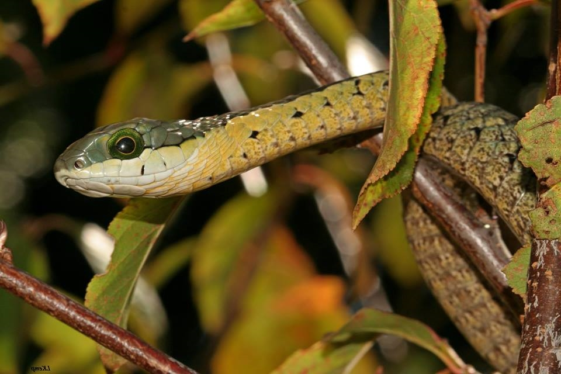

Maritz Lab

Maritz, B., Penner, J., Martins, M., Crnobrnja-Isailovic, J., Spear, S., Alencar, L.R.V., Sigala-Rodriguez, J., Messenger, K., Clark, R.W., Soorae, P., Luiselli, L., Jenkins, C., & H. Greene. (2016) Identifying global priorities for the conservation of vipers. Biological Conservation.
[pdf]
Maritz, B., Kgditse, M., & G.J. Alexander (2016) Snake body frequency distributions are robust to the description of novel species. Ecosphere. 7(5): e01348.
[pdf]
Tolley, K.A., Alexander, G.J., Branch, W.R., Bowles, P., & B. Maritz (2016) Conservation status and threats for African reptiles. Biological Conservation.
[pdf]
Maritz, B. and G.J. Graham (2016) Scale-dependent orientation in movement paths: a case study of an African viper. Ethology. 122(3): 207-14.
[pdf]
Miller, A.K., Maritz, B., McKay, S., Glaudas, X, & G.J. Alexander (2015) An ambusher's arsenal: chemical crypsis in the puff adder (Bitis arietans). Proceedings Royal Society B. 282(1821): 20152182.
[pdf]
Alexander, G.J. and B. Maritz (2015) Sampling interval affects the estimation of movement parameters in four species of African snake. Journal of Zoology. 297(4): 309-18.
[pdf]
Maritz, B. and G.J. Alexander (2014) Namaqua Dwarf Adders are generalist predators. African Journal of Herpetology. 63(1): 79-86.
[pdf]
Böhm, M. et al. (2013) The conservation status of the world’s reptiles. Biological Conservation. 157: 372-85. (See link for the full author list)
[pdf]
Drake, D.C., Maritz, B., Jacobs, S., Crous, C.J., Engelbrecht, A., Etale, E., Fourie, M., Furniss, D.G., Scott, S.L., Parusnath, S., & Tye, D.R. (2013) The propagation and dispersal misinformation in ecology: is there a relationship between citation accuracy and journal impact factor? Hydrobiologia. 702: 1-4.
[pdf]
Maritz, B. and G.J. Alexander (2013) Namaqua Dwarf Adders must breed frequently: the problem with being small. Journal of Zoology. 289: 27-31.
[pdf]
Maritz, B. (2012) To run or hide?: escape behavior in a cryptic African snake. African Zoology. 47: 270-4.
[pdf]
Maritz, B. (2012) Natural History Note: Bitis schneideri Relative prey size. African Herp News. 57: 16.
[pdf]
Maritz, B. (2012) Natural History Note: Meroles knoxii Forced copulation. African Herp News. 57: 17.
[pdf]
Maritz, B. and G.J. Alexander (2012) Movement patterns in the smallest viper, Bitis schneideri. Copeia. 2012: 732-7.
[pdf]
Maritz, B. and G.J. Alexander (2012) Population density and survival estimates of the African viperid, Bitis schneideri. Herpetologica. 68(2): 195-202.
[pdf]
Maritz, B. and G.J. Alexander (2012) Dwarfs on the move: Spatial ecology of the world’s smallest viper, Bitis schneideri. Copeia. 2012: 115-20.
[pdf]
Maritz, B. and G.J. Alexander (2011) Morphology, sexual dimorphism, and growth in the smallest viperid, Bitis schneideri (Reptilia: Squamata: Viperidae). Journal of Herpetology. 45(4): 457-62.
[pdf]
Alexander, G.J. and B. Maritz (2010) Natural History Note: Bitis arietans partial resistance to Naja venom. African Herp News. 50: 34-36.
[pdf]
Branch, W.R. and B. Maritz (2010) Geographic distribution: Acontias namaquensis. African Herp News. 51: 28-29.
[pdf]
Maritz, B. and G.J. Alexander (2010) Geographic distribution: Dendroaspis polylepis. African Herp News. 51: 27-28.
[pdf]
Maritz, B. and S.L. Scott (2010) Assessing the threat of avian predation on a small viperid snake. African Zoology. 45(2): 309–14.
[pdf]
Maritz, B. (2009) Natural History Note: Microacontias litoralis copulation. Herpetological Review. 40(2): 223.
[pdf]
Masterson, G.P.R., Maritz, B., Mackay, D., & G.J. Alexander (2009) The impacts of past cultivation on the reptiles in a South African grassland. African Journal of Herpetology. 58(2): 71-84.
[pdf]
Wessels, B.R. and B. Maritz (2009) Natural History Note: Bitis schneideri Diet. Herpetological Review. 40(4): 440.
[pdf]
Maritz, B. and G.J. Alexander (2008) Breaking ground: quantitative fossorial herpetofauna in South Africa. African Journal of Herpetology. 58(1): 1-14. [pdf]
[pdf]
Maritz, B. (2008) Namaqua Dwarf Adder (Bitis schneideri) envenomation. South African Medical Journal. 98(10):788.
[pdf]
Masterson, G.P.R., Maritz, B., and G.J. Alexander (2008) Effect of fire history and habitat structure on herpetofauna in a South African Grassland. Applied Herpetology. 5: 129-43.
[pdf]
Maritz, B. (2007) Natural History Note: Mehelya nyassae feeding. Herpetological Review. 38(3): 341.
[pdf]
Maritz, B. and G.J. Alexander (2007) Herpetofaunal utilisation of riparian buffer zones in an agricultural landscape, in Mtunzini, South Africa. African Journal of Herpetology. 56(2): 163-9.
[pdf]
Maritz, B., Masterson, G.P.R., D. Mackay, D., and G.J. Alexander (2007) The effect of funnel trap type and size of pitfall trap on trap success: implications for ecological field studies. Amphibia-Reptilia. 28: 321-8.
[pdf]
Maritz, B., Masterson, G.P.R., Mackay, D. and G.J. Alexander (2007) Geographic distribution: Xenopus muelleri. Herpetological Review. 38(2): 216.
Maritz, B. and Breytenbach, L. (2015) Natural History Note: Acontias plumbeus Agonistic Behaviour. African Herp News. African Herp News. 62:30-32.
Maritz, B., Blackburn, J.L, and P. Huang (2015) Natural History Note: Amblyodipsas polylepis Mimicry. African Herp News. 61:23-24.
Maritz, B., Blackburn, J.L. and P. Huang (2015) Natural History Note: Gonionotophis nyassae Diet. African Herp News. 61: 25-26.
Maritz, B., Wallner, A., and Deans, R. (2013) Natural History Note: Bitis parviocular Reproduction. African Herp News. 59: 28 - 29.
Maritz, B. (2013) Natural History Note: Bitis arietans Predation. African Herp News. 59: 21 - 28.